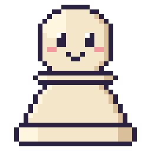
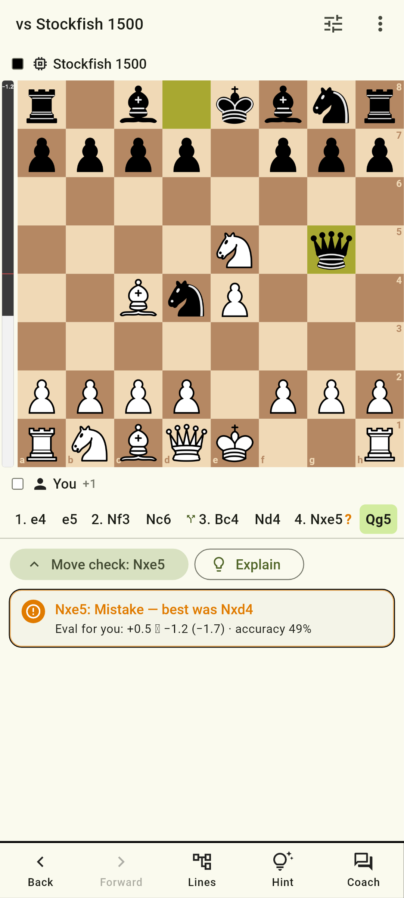
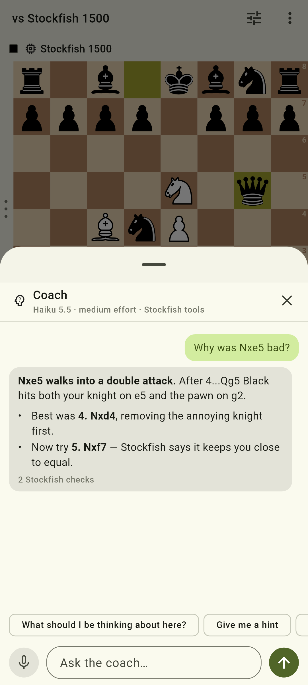
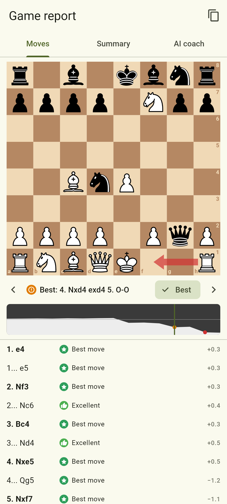
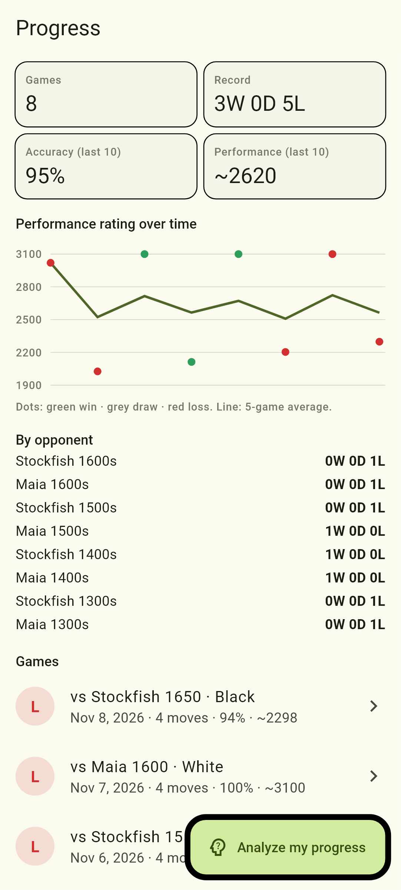
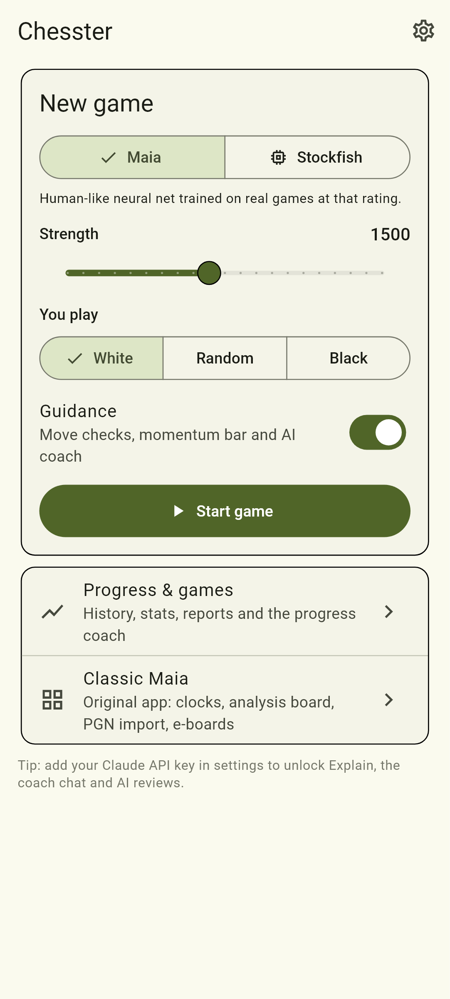

A private chess dojo. Play a human-like opponent, take back anything, and have an AI coach explain your moves in plain English, with Stockfish checking every claim.





Maia-3 learned from millions of real games and plays like a person at 600–2600. When you want a strict engine, choose Stockfish at any Elo up to full strength.
Undo any time and try another idea. Every attempt is kept as a branch you can come back to.
The Claude coach tells you why a move worked or failed, and runs Stockfish while it explains so it checks lines instead of guessing.
No account and no tracking. Your games are files on your device. The AI is optional and uses your own API key.
One tap rates your last move: Good move, but Nxc6 is better Blunder: best was Bg7, with the evaluation and accuracy.
A hidden evaluation bar beside the board. Tap it to see who's winning, and tap again to hide it.
Ask why a move was good or bad, or talk through the position by typing or by voice.
Accuracy, blunders, an evaluation graph and your estimated performance Elo against the opponent, plus an AI review you can question.
Your rating trend and record by opponent, plus a coach that reads all your games and builds a training plan.
Guidance on or off. Off means a clean game without help, and the post-game analysis is still there.
…-arm64.apk file from the latest release.…-windows-x64.zip file.chesster.exe.